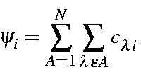
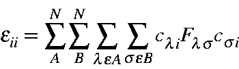
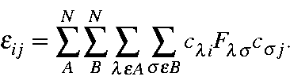
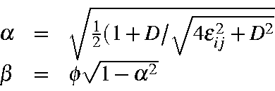
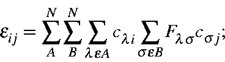
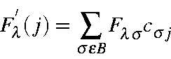
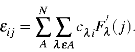

In a system of N atoms, let a molecular orbital, yi, be represented by

Then the energy of a M.O. can be evaluated from

and the matrix element representing the energy term between occupied M.O. yi and virtual M.O. yj would be

Annihilation of a matrix element is achieved by performing a unitary transform on the M.O.s involved

where the rotation angles a and b are calculated from the molecular orbital energy matrix elements

where D = ejj -eii and f = 1 if eij is negative, f = -1, otherwise.
By evaluating partial sums, the calculation of eij can be made more efficient. If eij is re-written as

then the partial sum

can be used to simplify eij:

Because the vector F'(j) is evaluated once, and then used for all i, the calculation of the eij is changed from an n3 process to a n2 process. The use of the partial sum F'(j) also speeds up the evaluation of the virtual M.O. energies. Unfortunately, it does not speed up the calculation of the occupied M.O. energies.